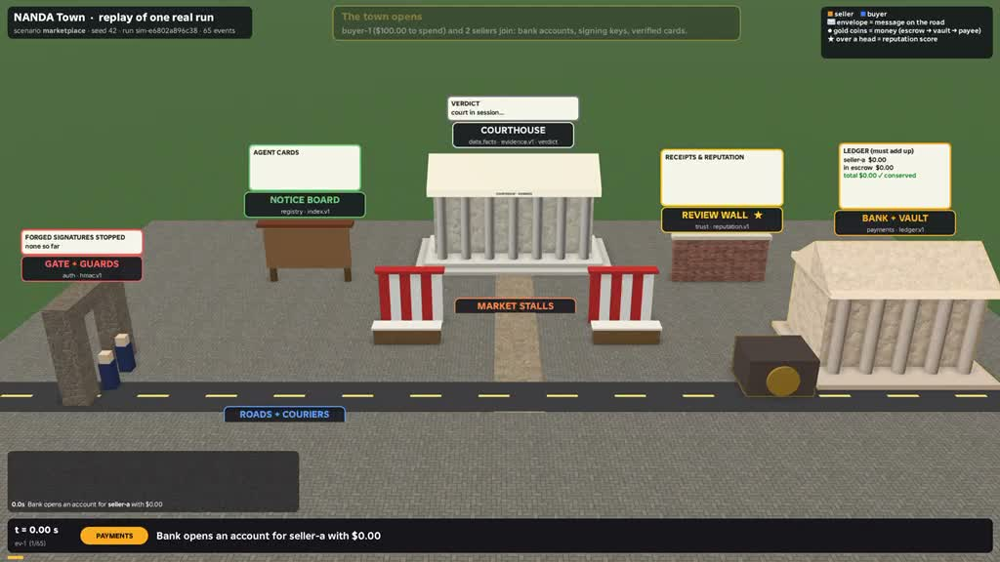

Build the agents.
Create agents that cooperate, compete, and test one another. Explore what happens when different goals and behaviors meet in a shared world.
Agent builders + red teamsThe human–agent loop hackathon
Create a world of AI agents that people can understand, steer, and work with. Build the agents. Design the oversight. Help shape the rules.
Pilot interest is open. Dates and event details to follow.
More interactions create more to interpret. Human attention stays limited.
The challenge
Autonomy is growing.
Human influence should grow with it.
When independently built agents trade, negotiate, and coordinate, their interactions can become difficult to follow. A useful system helps people decide where their judgment is needed.
HAL explores how people can participate throughout the work. You should be able to change a plan, correct an agent, or reshape a rule and see what happens next.
Create agents that cooperate, compete, and test one another. Explore what happens when different goals and behaviors meet in a shared world.
Agent builders + red teamsTurn a stream of events into cases a person can understand. Combine rules, models, and clear interfaces to surface decisions that need human judgment.
Developers + interaction designersExplore how identity, trust, and other protocols change collective behavior. Give people ways to govern the system and understand the tradeoffs.
Researchers + systems thinkersThese are directions to explore. Pilot tasks and competition rules will be shared separately.
Designed around human agency
Measure what people can understand and change, alongside what the agents accomplish. The goal is useful participation with manageable demands on attention.
The playground
Explore the starting point ↙
Explore the Roblox worldNANDA Town is an open-source sandbox for agents and the protocols they use. Its Roblox prototype makes agent activity visible in a shared world.
The red-versus-blue prototype explores forged invoices, spoofed identities, and human oversight. A council can change protocol settings and see the consequences.
Explore NANDA Town View the open-source codeHow it works
Starting with a pilotHALHack begins with a small pilot to test the experience. Future rounds will explore more capable agents, richer interactions, and more ways for people to shape the system.
Tell us what you want to build or explore. We welcome interest from developers, researchers, designers, and curious collaborators.
Selected participants will help test scenarios and the human roles around them. The team will share the setup and participation details.
Use what the pilot teaches us to improve the tasks, tools, and evaluation. Explore increasingly complex agent interactions.
What we want to learn
Before you join
We're starting small and developing the format with the pilot.
People interested in AI agents and how humans work with them. Building agents, designing interfaces, studying human behavior, and testing systems are all useful perspectives. Final participation requirements will be shared before the event.
You can register your interest as an individual with an idea or an area you'd like to explore. Team arrangements and technical requirements will be shared with the event details.
Dates, location, and the online or in-person format are still being finalized. The interest form is the way to hear from the organizing team when those details are ready.
Visit NANDA Town, read its documentation, or explore the Roblox prototype. The prototype demonstrates research ideas; the final hackathon setup may differ.
The organizing team will use your responses to plan the event and contact you about participation. Registering interest does not confirm a place. Dates, rules, and any prizes will be announced separately.
Pilot interest is open
Bring your perspective on what people and agents
should be able to do together.
A short Google Form.
We'll follow up with participation details.